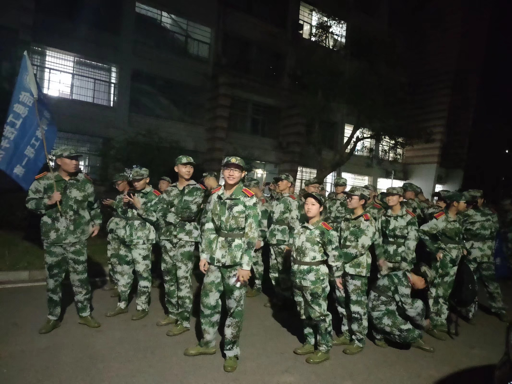
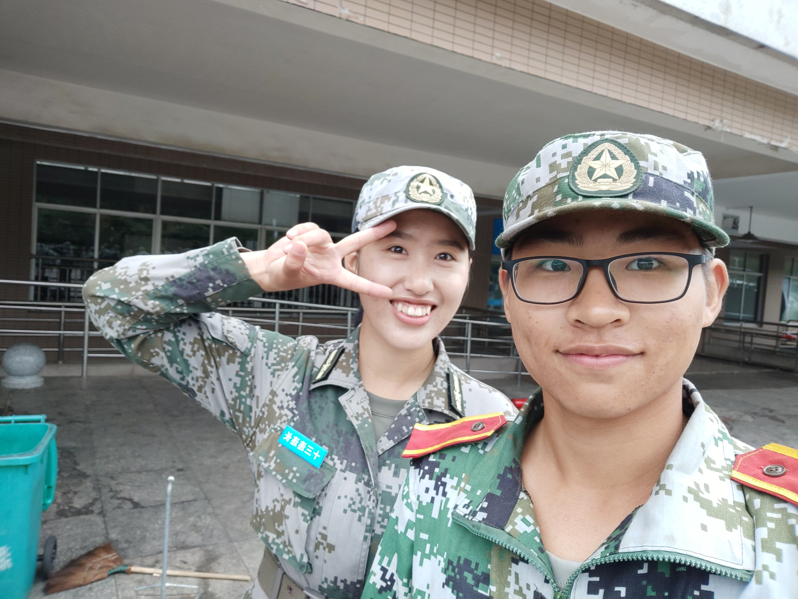
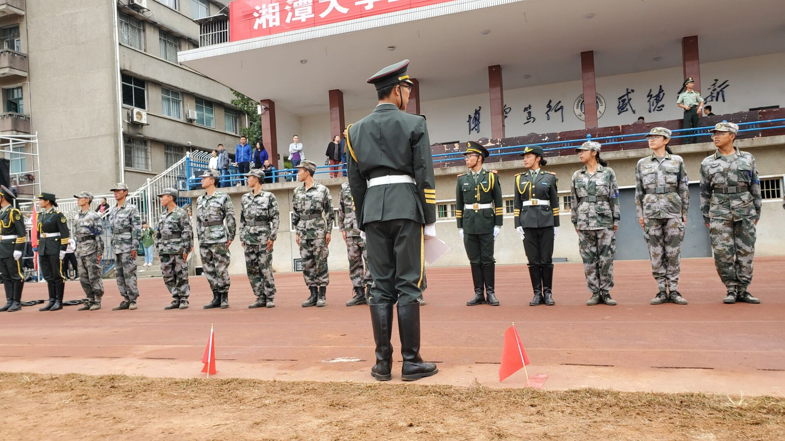

第一天晚上
第二天上午
研学铜官窑

我的教官们
看这可爱的张教官，哈哈  我的畅想
一听说“军训”，我是既兴奋又紧张。兴奋的是我终于能有一次独立生活的体验了，紧张的是教官凶不凶?他的要求高不高?我想，只要自己听好每一个指令，做好每一个动作，再凶的教官也会给我“慈眉”和“善目”的。
我畅想着，那里的训练一定是有趣刺激的。小到人与人比，大到班与班比，每个人都有竞争的心态，练习起来不就更认真，用心了吗?
我畅想着，教官一定是一个幽默风趣的教官。在我们训练时，他一定会不时流露出一些幽默风趣的语言，让大家开怀大笑。在训练当中，我们不免会感觉到疲惫不堪，但只要听到那充满乐趣的声音，再无精打采的心情也会被一扫而光。
我畅想着，寝室也一定是充满温馨的。与自己亲爱的小伙伴们在一起，有说有笑，一起分享各自的感受与收获，还有比这更快乐的吗?一起睡觉，一起交谈，一起分享，一定会让军训这幅画卷显得更温馨、和谐。
我盼望着军训，因为这是一次学会独立，学会担当的好机会。
我的坚持
看起来，太阳并不大，但是这是早晨7点的太阳，远不如10点的太阳，更不如下午2点30的太阳
反正我是忘不掉那天不舒服打报告的人有多少，有的人肚子不舒服想吐，有的人头痛昏沉，有人腿脚颤抖......
我还是坚持下去了
但是我还是觉得，伤病连是真舒服，虽然我初中高中都参加过军训，但是当时可以穿自己的鞋，大学军训不能穿自己鞋，我觉得这是最痛苦的
还好我之后一些天一直穿的自己的鞋，没有那么痛苦
我是不会忘记第一天的
我的研学
反正我是没有想到我们居然有那么幸运,居然能在军训的时候去旅游一次
我记得以前一直在电视里看见广告，其实我是知道这个地方的，虽然这个地方没有啥文化底蕴，单纯的靠现代化技术建造的
也正是因为这个原因，这里还有很多我没有见过的东西，让我见识了很多
比如5D电影，说实话4D电影我都还没看过,真是让人又悲伤又开心
还让人印象深刻的事是门票是真的贵！！！！最便宜好像是两百多吧，最贵的是六百多,这一波血赚不亏
这一波白嫖，哈哈。另外这也是我第一次同一天去了那么多的博物馆，尤其是机器人博物馆，看的多，玩的多，而且我和伙伴们还一起花钱体验了一下VR
回来其实挺累的，还要写啥子新闻稿，这让我挺烦的,不说了，看看我文笔吧
心灵与科技之旅
——记19级网一铜官窑之旅
我们是有幸的一批军训新生，我们有幸能够在近祖国70周年华诞之际，进行身体与灵魂的洗礼，不仅如此我们还能得到去铜官窑古镇参观和表白祖国的机会。
铜官窑，丝绸之路的足迹，是一个湖南人甚至全中国人都闻于耳目的文化名地。
人民网曾报道过。2018年8月28日，新华联集团斥资百亿打造的铜官窑古镇盛大开放，七个博物馆同期开馆，黑石号特技秀、飞行影院、街区演艺、四大戏楼全面上演，三大酒店正式营业。这个总量110万方、涵盖数十种业态的大型文旅项目，于2016年3月正式动工，在历时不到三年的开发建设后即投入运营。 而在2019年9月23日，幸运的我们踏着朝阳出发，趁着夕阳归来，每个人脸上都洋溢着满足的喜悦和知足的疲倦，这让我们军训苦痛一去不复返，更有信心去面对接下来的一切挑战。
然而时间的确有限，我们只参观了部分景点，但我们向祖国母亲表达了深切的爱，也充分感受到了铜官窑的文化底蕴，更加坚定了我们对祖国的文化自信。
尤其是在黑石号特秀技表演处我们集体唱《我和我的祖国》的时候，集体的表达，既是形式感的体现，也是真心的表达。那响亮的歌声感染了现场的每一个人，那庄严的氛围让每个人的心情到达了极点...... 而参观的5D影院和机器人博物馆，让我们感受到了科技的巨大魅力和震撼，我想每个人心中都有自己的前路灯塔，或是学习那无人机的简便控制，或是学习那5D惊人的特效制作，又或是学习那人工智能的高级编程....... 至少我们网一全体同学都如此，如此地沉浸，沉浸在心灵和科技的旅途之中，不断前行！陆志强
2019.09.23
我的教官们
营长,副营长啥的就跟我没很大关系了，就给个视频吧，哈哈
我们网一网二的教官是许教官，一个腼腆的女孩子
训练很厉害，男一的首席女教官就是她，但是对我们非常好，蹲是放松蹲，站也是放松站，多好，你说是吧
然而我之后去了男三，从男一到男二是因为一个女教官告诉我说要两肩向后微张，然后我听了她的话，结果调整过程中被男一的南教官看见了就让我去了男二，我......
到了男二之后我想去学军体拳，所以故意表现差到了南三，结果今年不学军体拳......
还好男三的两教官人都很好，我给了他们面子没有划水，挺认真训练的，最后的一天很感动，即使是全体受罚，我们依然是不后悔
对了还有一件事，就是9.30那天，教官们的表演，快乐的一批！
只可惜晚上也不能录什么好视频，不能直观的感受那份快乐
我也无法用语言形容，就快乐
快乐,快乐......
重要的事说三遍
 看这可爱的副营长，哈哈
看这可爱的副营长，哈哈
我们的表演
今年是真的烦，为啥我们表现的那么好却一个奖都没有，以前讲信工院年年一等奖，到我们这啥也没有，听说是有内幕，但是我们都不敢确定，其实当我们听到二等奖没有信工院的时候，我们很开心，都以为很稳了
结果.....啥也没有，可是连营长都说我们超常发挥了，唉，享受过程吧，至少还有个军容风纪一等奖不是？
还说一件事
三营优秀！
我们优秀！
教官优秀！
信工院优秀！